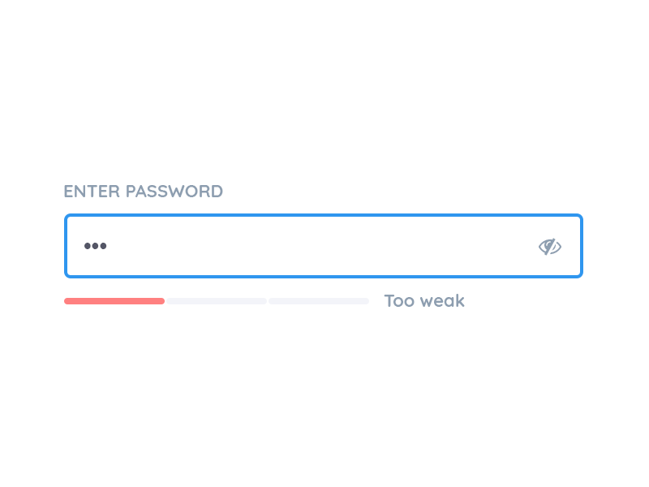
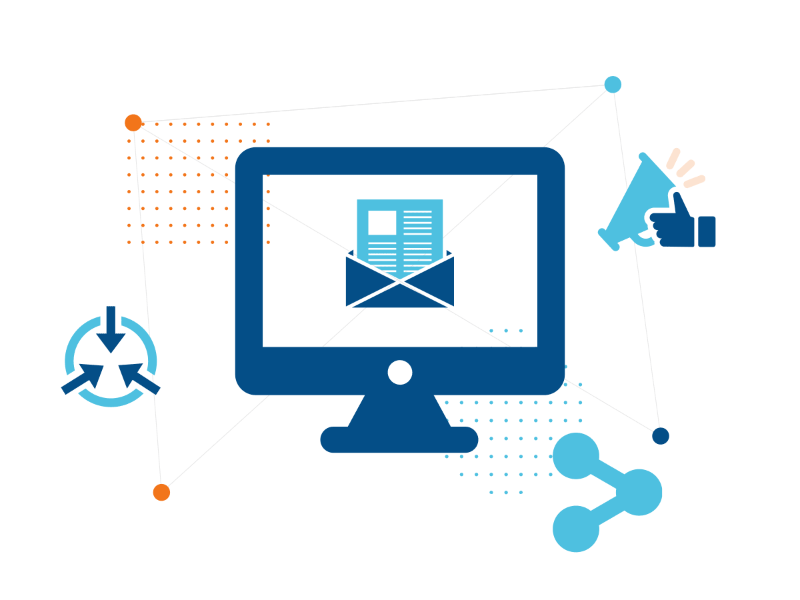

Используйте многофакторную аутентификацию везде, где это возможно
Многофакторная аутентификация – это способ проверки подлинности, при котором для доступа к учетной записи используется два или более метода проверки. Например, вместо простого запроса имени пользователя или пароля при многофакторной аутентификации запрашивается дополнительная информация. Многофакторная аутентификация снижает вероятность кибератаки. Чтобы защитить онлайн-аккаунты, рекомендуется по возможности использовать многофакторную аутентификацию. Для обеспечения безопасности в интернете можно также можете применять сторонние приложения проверки подлинности, такие как Google Authenticator и Authy.
Внимательно относитесь к выбору браузера
Браузер – это основной инструмент для выхода в интернет, он играет ключевую роль в обеспечении безопасности в интернете. Хороший веб-браузер должен быть безопасным и обеспечивать защиту от утечки данных.Обзор защищенных браузеров
Создавайте надежные пароли и используйте менеджер паролей
Надежный пароль помогает обеспечить безопасность в интернете. Он обладает следующими свойствами:
🔒 Длинный: минимум 12 символов, в идеале, даже больше;
🔒 Содержит заглавные и строчные буквы, а также специальные символы и цифры;
🔒 Не очевидный: в пароле не используются комбинации последовательных цифр (1234) и личная информация, которую может угадать тот, кто вас знает;
🔒 Не содержит запоминающихся сочетаний клавиш.
Как защитить электронную почту
Электронная почта разработана так, чтобы быть максимально открытой и доступной и позволить людям общаться друг с другом. Недостатком такой доступности является уязвимость некоторых аспектов электронной почты. Это позволяет злоумышленникам использовать электронную почту для нарушения безопасности в интернете.
Как бороться со спамом по электронной почте?Спам-сообщения – это массово рассылаемые нежелательные сообщения. Большинство провайдеров электронной почты используют алгоритмы фильтрации спам-сообщений, но, несмотря на это, спам может продолжать приходить. Чтобы избавиться от спама, можно предпринять следующие шаги:
🔒 Отмечать спам-сообщения как спам. Это поможет провайдеру электронной почты улучшить фильтрацию спама. Способ отметить сообщение как спам зависит от используемого почтового клиента: Outlook, Gmail, Apple Mail, Yahoo Mail и т. д.;
🔒 Никогда не переходить по ссылкам и не открывать вложения в спам-сообщениях. В результате таких действий на устройство могут быть загружены вредоносные программы. По крайней мере, такие действия служат подтверждением для спамеров, что это активная учетная запись электронной почты, и стимулируют их рассылать еще больше спама;
 🔒 Соблюдать осторожность при использовании адреса электронной почты. Полезно иметь дополнительную временную учетную запись электронной почты, используемую исключительно для регистрации и подписки. Она должна отличаться от рабочей и от используемой для переписки с друзьями и близкими;
🔒 Большинство провайдеров электронной почты имеют настройки конфиденциальности. Убедитесь, что они установлены на комфортном для вас уровне;
🔒 Изучить сторонние спам-фильтры для электронной почты. Они обеспечивают дополнительный уровень кибербезопасности, поскольку электронные письма, прежде чем попасть к адресату, должны пройти через два спам-фильтра: спам-фильтр почтового провайдера и сторонний фильтр.